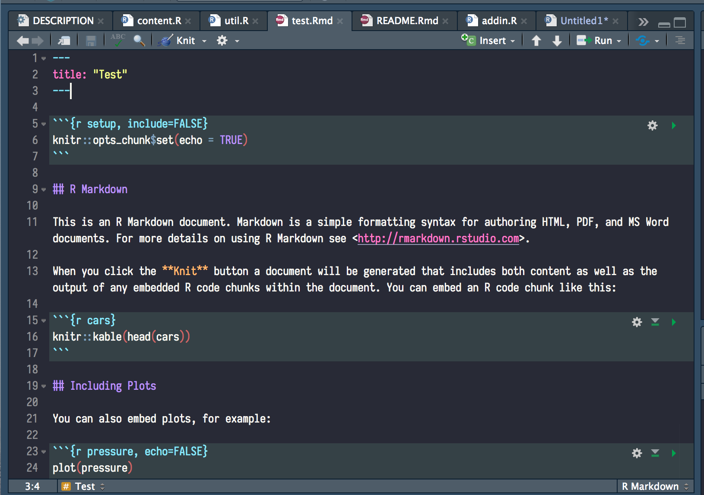
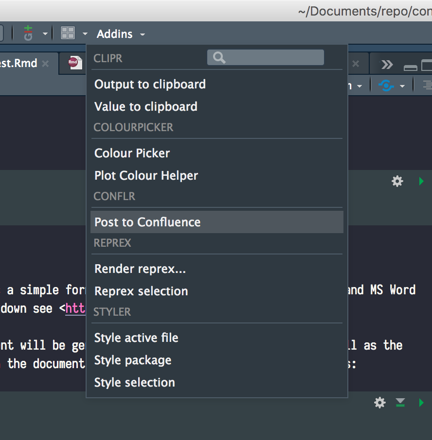
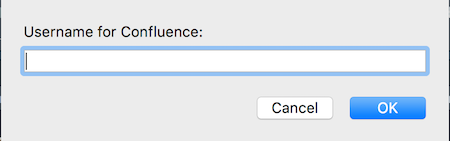
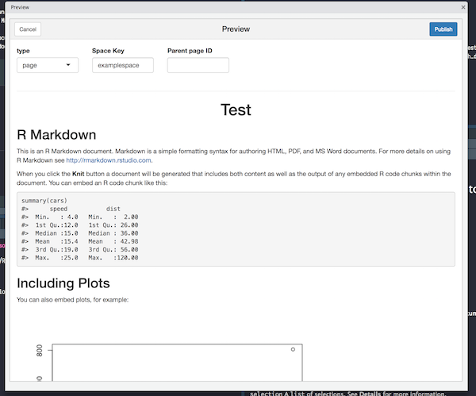

conflr is an R package to post R Markdown documents to Confluence, a content collaboration tool by Atlassian.
Installation
Install conflr from CRAN with:
install.packages("conflr")
Alternatively, if you need the development version, install it with:
# install.packages("devtools") devtools::install_github("line/conflr")
Preparation
conflr uses these environmental variables to access your Confluence.
-
CONFLUENCE_URL: The base URL of your Confluence. e.g.https://confluence.example.com(On Atlassian Cloud,https://<your-domain>.atlassian.net/wiki). -
CONFLUENCE_USERNAME: Your username (On Atlassian Cloud, your email address). -
CONFLUENCE_PASSWORD: Your password (On Atlassian Cloud, your API token. For more details about API token, please read the official document).
There are several ways to set these environmental variables. The quickest way is to enter in the popups that are displayed when you run the addin (see Usages section below). The inputs are cached in the environmental variables listed above by default.
Another way is to set the variables in the .Renviron file (you can open the file with usethis::edit_r_environ()). For example, you can set the base URL in the file as the following.
Usages
conflr provides the following ways to post R Markdown documents to Confluence.
- Use an RStudio Addin
- Run
confl_create_post_from_Rmd()on console - Specify
conflr::confluence_documenton the YAML front-matter
RStudio Addin
1. Move focus to the .Rmd file and click “Post to Confluence” Addin
(Caution for those who are not familiar with R Markdown: R Markdown’s powerfulness allows you to execute arbitrary code; be sure about what the code does before clicking “Post to Confluence”!)


Then, you will be asked your username and password.

2. Check the preview and click “Publish”
- type: The type of the page (page means a normal wiki page, whereas blogpost mean a blog post, not a page).
- Space Key: The key of the space you want to post.
- Parent page ID: (optional): The ID of the parent page to the page.
- Use original image sizes: If checked, do not resize the images.
- Fold code blocks: If checked, code blocks are folded by default.
- TOC: If checked, add a Table of Contents.
- TOC depth: The lowest heading level to include in the Table of Contents.

confl_create_post_from_Rmd()
If you don’t use RStudio, you can use confl_create_post_from_Rmd(). The basic usage is
confl_create_post_from_Rmd("~/path/to/your.Rmd")
Batch use
If you want to use this function without interaction, specify interactive = FALSE. This skips any confirmations or previews.
confl_create_post_from_Rmd("~/path/to/your.Rmd", interactive = FALSE)
Note that, if you want to run this periodically, you also need to set update = TRUE to allow conflr to overwrite the existing page.
confl_create_post_from_Rmd("~/path/to/your.Rmd", interactive = FALSE, update = TRUE)
conflr::conflence_document
conflr’s functionality is also available as a custom R Markdown format; You can specify conflr::confluence_document to output in the front matter of your R Markdown document.
For example, if you set the following front matter, pressing Knit button on RStudio (or running rmarkdown::render()) will publish the R Markdown document to Confluence.
For the detail about available options, please refer to ?confluence_document.
Options
conflr recognizes these options:
-
conflr_supported_syntax_highlighting: A character vector of languages that your Confluence supports the syntax highlighting in addition to the default languages (by default,sql,cpp,python,html,css,bash, andyamlare supported). -
conflr_addin_clear_password_after_success: IfTRUE, unsetCONFLUENCE_PASSWORDafter the page is successfully uploaded via addin.
Know limitations
LaTeX support
conflr supports Math expressions to some extent. But, it requires LaTeX Math addon installed. Otherwise, you will see “unknown macro” errors on the page.
htmlwidgets (e.g. leaflet, plotly)
conflr doesn’t support htmlwidgets-based packages like leaflet and plotly. Instead, you can embed the screenshot by setting screenshot.force = TRUE in the chunk option (c.f. https://bookdown.org/yihui/bookdown/html-widgets.html).
Advanced Usages
conflr is also a (non-complete) binding to Confluence’s REST API. These low-level functions might be useful when you need to access to your Confluence programmatically.
library(conflr) # list pages res <- confl_list_pages(spaceKey = "foo") purrr::map_chr(res$results, "id") # get page info page <- confl_get_page(res$results[[2]]$id) page$title # create a page new_page <- confl_post_page( spaceKey = "foo", title = "Test", body = glue::glue( '<ac:structured-macro ac:name="code"> <ac:plain-text-body><![CDATA[this is my code]]></ac:plain-text-body> </ac:structured-macro> ')) new_page$`_links`
How to contribute
See CONTRIBUTING.md
License
Copyright (C) 2019 LINE Corporation
This program is free software: you can redistribute it and/or modify
it under the terms of the GNU General Public License as published by
the Free Software Foundation, version 3.
This program is distributed in the hope that it will be useful,
but WITHOUT ANY WARRANTY; without even the implied warranty of
MERCHANTABILITY or FITNESS FOR A PARTICULAR PURPOSE. See the
GNU General Public License for more details.
You should have received a copy of the GNU General Public License
along with this program. If not, see <http://www.gnu.org/licenses/>.See LICENSE.md for more detail.